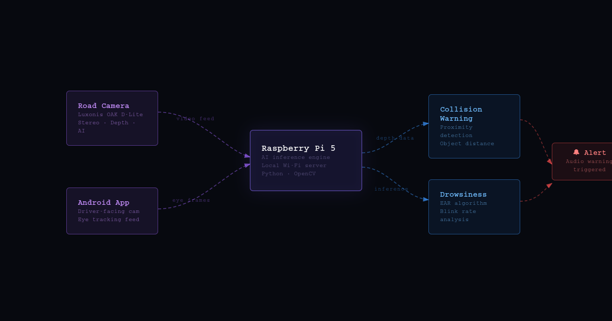
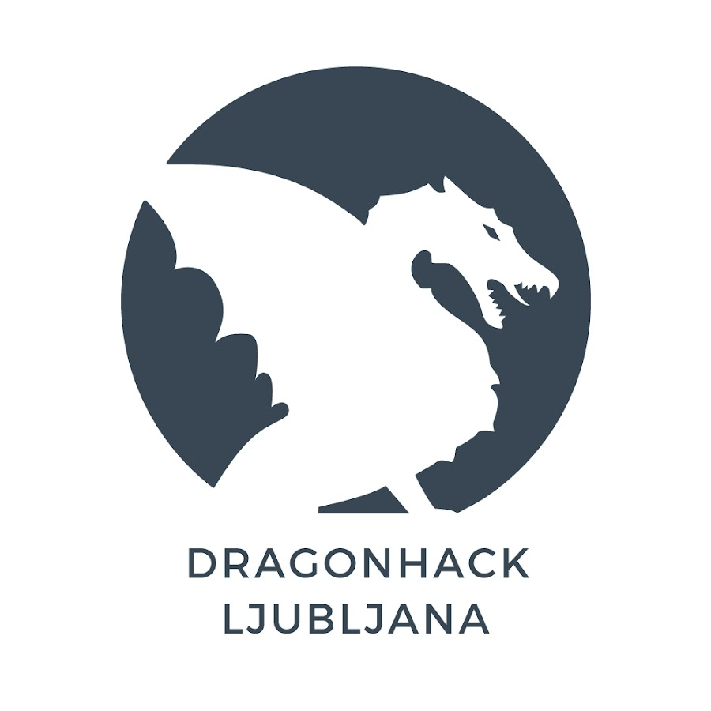

Overview
The Problem
Over 25% of vehicles on the Balkan roads are at least 17 years old - and older cars have significantly higher accident fatality rates. Modern driver assistance systems (ADAS) are standard on new vehicles, but entirely out of reach for the vast majority of drivers who can't afford a new car.
The two leading causes of accidents — driver fatigue and failure to maintain safe following distance — are exactly what modern ADAS systems address. Safe Dash was built to close this gap: a low-cost, no-modification-required device that delivers the same two core protections to any vehicle.
The Solution
Safe Dash runs on a Raspberry Pi 5 and uses two camera inputs to monitor both the driver and the road simultaneously. The system is entirely self-contained — no app installation, no wiring, no vehicle modifications.
-
01.
Drowsiness Detection: Eye-movement monitoring via the smartphone's front-facing camera. A CV model tracks eye closure patterns in real time and triggers an audio alert when drowsiness is detected.
-
02.
Collision Warning: A Luxonis OAK-D Lite stereo depth camera monitors the road ahead. Depth estimation is used to calculate the distance to the nearest obstacle and warn the driver when a collision is imminent.
-
03.
Plug-and-Play: The entire system runs headlessly on boot. Mount the phone, attach the OAK-D to the dashboard, and the device is ready — no technical setup required from the user.
Architecture

Result
Dragonhack 2023 · Ljubljana, Slovenia
Tech Stack
My Role
- Drowsiness Detection Model
- System Architecture
- Collision Warning (partial)
Developed in collaboration with
 University of Ljubljana
University of Ljubljana

Dragonhack Ljubljana